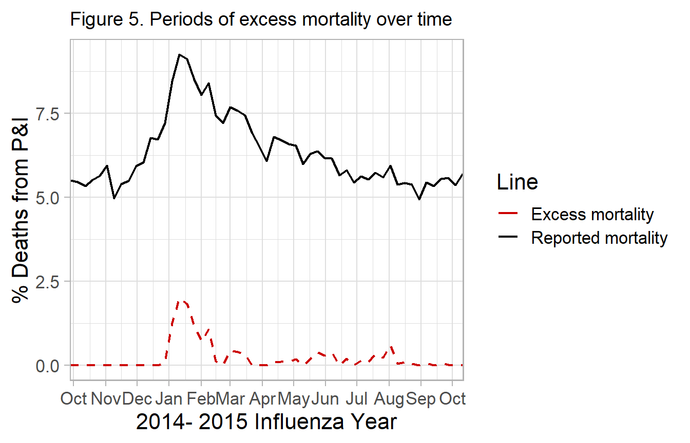
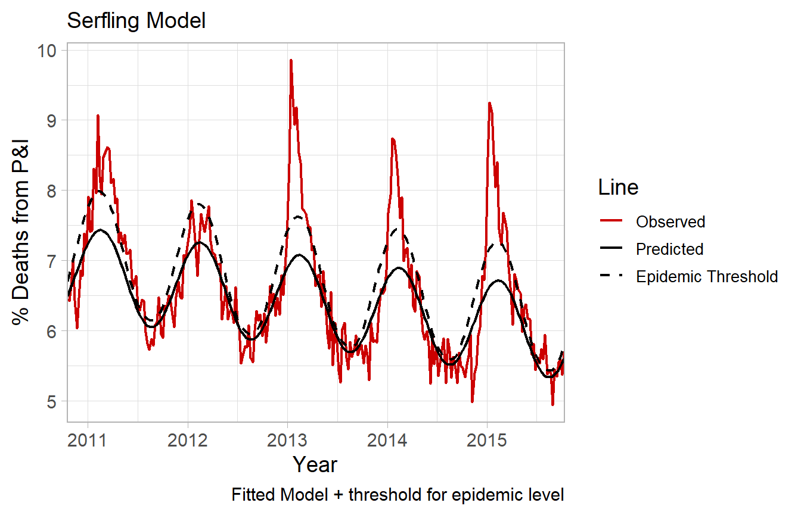

Serfling Model Background
Kevin W. McConeghy
2018-04-06
The primary method paper was a 1963 paper published by Robert Serfling working for the Centers for Disease Control and Prevention.
The paper outlines a strategy for estimating what proportion of deaths are due to influenza. The underlying issue is that many deaths reported due to influenza and pneumonia may be due to other causes, while many deaths attritable other causes may be due to influenza. The primary goal was to develop a “standard curve of expected seasonal mortality”. The concept was that an individual could use historical data to estimate seasonal trends in influenza. Then for a given place-time an researcher could evaluate how many deaths occurred in excess of this baseline rate. Much of the original paper is of little interest given modern computing methods, but the basic concept persists as a reasonable approach to estimating “flu” deaths.
Influenza
Critically, it should be understood that influenza epidemics are highly seasonal with spikes in the winter months, commonly January - February. This seasonality leads to a cyclical rate of influenza morbidity and mortality.
It was noted by early researchers that the rate of reported deaths (red line), may be modeled by a trigonomic function.
Linear and Cyclical Regression Models
The classical ordinary least squares framework is often described in matrix notation as:
\[y_i = X_i\beta + u_{i} \quad \textrm{where} \quad i = 1,..,n\]
Where \(y\) is a dependent variable, \(X\) is a vector of regressors (i.e. independent variables) with \(k\)-dimensions, \(\beta\) is a vector of the coefficients for \(X\), and \(u\) is the residual error term. often simply as: \(y= X\beta+u\).
Given a simple additive model with one independent variable t: \[Eq \ 1. \ y = \alpha_0 + \beta_1*t_1 + u\]
Let t, be the unit of time in figure 1 (week = 1, week=2, …). The above model is inadequate, and will poorly fit the data (figure) because the secular trend is non-linear.
Early investigators such as Serfling proposed that a Fourier term be added to model the cycle like so: \[Eq \ 2. \ y = \alpha_0 + \beta_1*t + sine(\frac{2 \pi t}{52}) + cos(\frac{2 \pi t}{52}) + u\] The original paper used 4-week periods so the period denominator is 13. The waveform will be approximately sawtooth if t resets within a period (0-52). If t is continuous it will be a smooth curve. This allows us to use a linear model which accounts for the cyclical nature of the disease. The original paper recommends one Fourier term.
Example. Fitted line (one Fourier term)
## Add fourier term
fit <- fludta %>%
mutate(week2 = row_number(),
theta = 2*week2/52,
sin_f1 = sinpi(theta),
cos_f1 = cospi(theta),
pred_y = predict( lm(perc_fludeaths ~
week2 + sin_f1 + cos_f1, data=.)))
A single Fourier term does a reasonable job approximating the secular trend of disease, except notably during severe influenza epidemics. The black solid line represents a single Fourier term.
During certain seasons, there is a pronounced spike above the predicted (fit) line. For example in the 12-13, 13-14 and 14-15 seasons. These can be subjectively considered severe influenza epidemics. However a goal could be to define objective criteria for epidemics. Such as any time-period 1.64 standard deviations above the fitted line representing a time of severe influenza morbidity and mortality, requiring significant public health intervention.
Estimation approach for attributable or “excess” mortality
The serfling paper describes 4 steps:
- Estimate secular trend
- Remove trend from data
- Estimate seasonal change from adjusted data
- Restore trend component
In this package we operationalize this like so:
- Construct a time-series dataset, with a variable for a flu outcome (i.e. deaths, hospitalizations).
- Estimate a cyclical regression as above;
- Fit a trend line (solid black line)
- predict epidemic threshold (dashed black line)
- Observations falling outside the dashed black line are “excess”
- Quantify values in excess of threshold
Step-wise example
The flumodelr function fluserf will perform the above steps. We present the individual steps here for demonstration.
It is assumed the influenza epidemic period begins Oct. 1st, and ends May 31st. This is a conventional “flu” season in the U.S. However individual areas / regions may justify tailored periods. These assumptions are modifiable as options in the regression function.
Step 1. Formatted influenza data
To compute a traditional Serfling model. The input dataframe must have time vector, indicator for the epidemic period (Oct. - May), and measure of influenza morbidity / mortality to be modeled.
fludta %>% select(yrweek_dt, perc_fludeaths)
#> # A tibble: 261 x 2
#> yrweek_dt perc_fludeaths
#> <date> <dbl>
#> 1 2010-10-17 6.44
#> 2 2010-10-24 6.43
#> 3 2010-10-31 6.65
#> 4 2010-11-07 7.01
#> # ... with 257 more rowsfluserf() Will allow you to specify the boundaries for epidemic periods, and then compute the baseline off of non-epidemic timepoints. Additionally you can provide it with a logical variable in the dataset which indicates the epidemic period.
Example adding epidemic period indicator
fludta <- fludta %>%
mutate(epi = if_else(month(yrweek_dt)>=10 | month(yrweek_dt)<=5, T, F))
fludta %>%
filter(year>=2010)
#> # A tibble: 261 x 8
#> year week fludeaths alldeaths perc_fludeaths yrweek_dt prop_flupos
#> <int> <int> <int> <int> <dbl> <date> <dbl>
#> 1 2010 42 726 11269 6.44 2010-10-17 0.0133
#> 2 2010 43 720 11204 6.43 2010-10-24 0.0193
#> 3 2010 44 739 11115 6.65 2010-10-31 0.0173
#> 4 2010 45 724 10321 7.01 2010-11-07 0.0231
#> # ... with 257 more rows, and 1 more variable: epi <lgl>We see that there is now an indicator for Oct - May.
Step 2. Fit predicted outcome and epidemic threshold
Here we estimate a model using only non-epidemic period timepoints. The coefficients from this model will then be used to predict values during the epidemic period.
Step 2a. Compute fourier terms
## Compute fourier terms
fludta_serfling <- fludta %>%
mutate(week2 = row_number(),
theta = 2*week2/52,
sin_f1 = sinpi(theta),
cos_f1 = cospi(theta))Step 2b. Baseline Cyclical model
Fit a model using non-epidemic periods, and excluding year 2015. This is the year we are focused on evaluating for excess mortality.
base_fit <- fludta_serfling %>%
dplyr::filter(epi==F & year<2015) %>%
lm(perc_fludeaths ~ week2 + sin_f1 + cos_f1,
data=., na.action = na.exclude)Fit a model using only non-epidemic periods.
Note regarding standard errors.
By default R’s predict.lm will fit a 95% prediction interval. In Serfling’s original paper it states:
“The epidemic threshold…is placed at a distance of 1.64 standard deviations above the trend line, a level which experience has shown to be useful for distinguishing epidemic increase from random variation.”
The CDC also describes the threshold as:
“The seasonal baseline of P&I deaths is calculated using a periodic regression model that incorporates a robust regression procedure applied to data from the previous five years. An increase of 1.645 standard deviations > above the seasonal baseline of P&I deaths is considered the ‘epidemic threshold,’ i.e., the point at which the observed proportion of deaths attributed to pneumonia or influenza was significantly higher than would be expected at that time of the year in the absence of substantial influenza-related mortality.”
fluserf follows this method, but the modified serfling function allows for more options for threshold prediction. 1.645 standard deviations is equal to a one-sided upper limit 95% confidence interval.
Step 2c. Add predicted values to original dataset.
## Fitted values + prediction interval
df_pred <- fludta_serfling %>%
dplyr::filter(year==2014 & week>=40 | year>2014) %>%
predict(base_fit, newdata=., se.fit=TRUE,
interval="confidence", level=0.90) #must specify 0.9 bc two-sided
pred_y0 <- df_pred$fit[,1] #fitted values
pred_y0_serf <- df_pred$fit[,3]
df_base <- fludta %>%
dplyr::filter(year==2014 & week>=40 | year>2014) %>%
add_column(., pred_y0, pred_y0_serf)
df_base %>% select(year, week, perc_fludeaths,
pred_y0, pred_y0_serf)
#> # A tibble: 55 x 5
#> year week perc_fludeaths pred_y0 pred_y0_serf
#> <int> <int> <dbl> <dbl> <dbl>
#> 1 2014 40 5.50 5.61 5.77
#> 2 2014 41 5.47 5.67 5.86
#> 3 2014 42 5.34 5.74 5.96
#> 4 2014 43 5.52 5.81 6.06
#> # ... with 51 more rows
% of Deaths from P&I - No. of influenza or pneumonia deaths / total number of deaths *100.
Expected % - A fit of the cyclical regression model, (one Fourier term).
Epidemic Threshold - The fitted line + 1.64 standard deviations.
Step 3. Compute excess deaths
The next step is to determine the difference in % of deaths in excess of the epidemic threshold.
df_excess <- df_base %>%
mutate(threshold = if_else(perc_fludeaths > pred_y0_serf, T, F),
simple_excess = if_else((perc_fludeaths - pred_y0_serf)>0,
perc_fludeaths - pred_y0_serf, 0))In addition to being in excess, Serfling applies a rule that values are counted starting from two consecutive timepoints exceeding the threshold, then stopped after two timepoints below the threshold. This rule is problematic depending on how the period is programmed, if the unit of observation is more granular (day or week) then the rule will have more false-positives, if less granular (i.e. month) if will have false-negatives.
Serfling consecutive rule
We show how to implement this below, however recommend that it not be used routinely.
## Identify consecutive epidemic periods
df_serf_excess <- df_excess %>%
mutate(serf_rule = if_else(threshold==T &
lead(threshold)==T &
lag(threshold)==T, T, F))
##reset beginning and end periods
df_serf_excess <- df_serf_excess %>%
mutate(serf_rule = if_else(serf_rule==F &
threshold==T &
lead(serf_rule)==T, T, serf_rule),
serf_rule = if_else(serf_rule==F,
threshold==T &
lag(serf_rule)==T, T, serf_rule))
##compute excess deaths
df_serf_excess <- df_serf_excess %>%
mutate(serf_excess = if_else(serf_rule==T,
perc_fludeaths - pred_y0_serf, 0))
df_serf_excess %>% select(year, week, threshold, simple_excess, serf_rule, serf_excess)
#> # A tibble: 55 x 6
#> year week threshold simple_excess serf_rule serf_excess
#> <int> <int> <lgl> <dbl> <lgl> <dbl>
#> 1 2014 40 FALSE 0. FALSE 0.
#> 2 2014 41 FALSE 0. FALSE 0.
#> 3 2014 42 FALSE 0. FALSE 0.
#> 4 2014 43 FALSE 0. FALSE 0.
#> # ... with 51 more rowsNote how for weeks 29 and 31, the Serfling rule discounts the excess mortality.

fluserf() function
##The following command completes the above steps
##fit serfling model
flu_fit <- fluserf(data=fludta, outc=perc_fludeaths, time=yrweek_dt)
flu_fit
#> # A tibble: 261 x 10
#> year week fludeaths alldeaths perc_fludeaths yrweek_dt prop_flupos
#> <int> <int> <int> <int> <dbl> <date> <dbl>
#> 1 2010 42 726 11269 6.44 2010-10-17 0.0133
#> 2 2010 43 720 11204 6.43 2010-10-24 0.0193
#> 3 2010 44 739 11115 6.65 2010-10-31 0.0173
#> 4 2010 45 724 10321 7.01 2010-11-07 0.0231
#> # ... with 257 more rows, and 3 more variables: epi <lgl>, y0 <dbl>,
#> # y0_ul <dbl>Plot function fluplot
fluplot(flu_fit, xvar=yrweek_dt, perc_fludeaths, y0, y0_ul,
ylab="% Deaths from P&I", title="Serfling Model")
Criticisms of this approach
The historical Serfling model should be considered as important background and an useful educational tool. But probably not applied in an research project.
The authors view the approach as a pragmatic one in the context of the 1960s when computation was difficult, but its implementation is now somewhat dated given modern computing methods. The constrains of needing an easy to estimate linear model are no longer relevant to the modern analyst. The use of a Fourier term to obtain fitted estimates and coefficients for “off-season” timepoints, then construct fitted lines for “on-season” timepoints makes many untested assumptions about the functional form and fixed parameters of seasonal influenza trend lines.
More elegant models (e.g. ARIMA, splines) are now available which may overcame the above limitations, and make fewer assumptions about the functional form.
Additionally the approach is dependent on an accurate baseline period. Whether to include mild or known epidemic seasons, which cut-off to define as the influenza season (e.g. week 40 - week 20) are important but subjective decisions the analyst must make.
The selected threshold for what constitutes “excess” is somewhat arbitrary. The original Serfling paper describes 1.64 standard deviations for 2 or more weeks as criteria. Recent papers have used the 95% prediction interval.
References
sessioninfo::session_info()
#> - Session info ----------------------------------------------------------
#> setting value
#> version R version 3.4.3 (2017-11-30)
#> os Windows 10 x64
#> system x86_64, mingw32
#> ui RTerm
#> language (EN)
#> collate English_United States.1252
#> tz America/New_York
#> date 2018-04-06
#>
#> - Packages --------------------------------------------------------------
#> package * version date source
#> assertthat 0.2.0 2017-04-11 CRAN (R 3.4.0)
#> backports 1.1.2 2017-12-13 CRAN (R 3.4.2)
#> bindr 0.1.1 2018-03-13 CRAN (R 3.4.4)
#> bindrcpp * 0.2.2 2018-03-29 CRAN (R 3.4.3)
#> broom 0.4.4 2018-03-29 CRAN (R 3.4.4)
#> cellranger 1.1.0 2016-07-27 CRAN (R 3.4.2)
#> cli 1.0.0 2017-12-14 Github (r-lib/cli@ab1c3aa)
#> clisymbols 1.2.0 2017-05-21 CRAN (R 3.4.3)
#> colorspace 1.3-2 2016-12-14 CRAN (R 3.4.0)
#> crayon 1.3.4 2017-10-27 Github (r-lib/crayon@b5221ab)
#> digest 0.6.15 2018-01-28 CRAN (R 3.4.3)
#> dplyr * 0.7.4.9000 2017-12-21 Github (hadley/dplyr@c04deb3)
#> evaluate 0.10.1 2017-06-24 CRAN (R 3.4.1)
#> flumodelr * 0.0.6 2018-02-21 local
#> forcats * 0.3.0 2018-02-19 CRAN (R 3.4.3)
#> foreign 0.8-69 2017-06-22 CRAN (R 3.4.3)
#> ggplot2 * 2.2.1 2016-12-30 CRAN (R 3.4.0)
#> glue 1.2.0 2017-10-29 CRAN (R 3.4.2)
#> gtable 0.2.0 2016-02-26 CRAN (R 3.4.0)
#> haven 1.1.1 2018-01-18 CRAN (R 3.4.2)
#> hms 0.4.2 2018-03-10 CRAN (R 3.4.4)
#> htmltools 0.3.6 2017-04-28 CRAN (R 3.4.0)
#> httr 1.3.1 2017-08-20 CRAN (R 3.4.1)
#> jsonlite 1.5 2017-06-01 CRAN (R 3.4.0)
#> knitr 1.20 2018-02-20 CRAN (R 3.4.2)
#> labeling 0.3 2014-08-23 CRAN (R 3.4.0)
#> lattice 0.20-35 2017-03-25 CRAN (R 3.4.3)
#> lazyeval 0.2.1 2017-10-29 CRAN (R 3.4.2)
#> lubridate * 1.7.3 2018-02-27 CRAN (R 3.4.3)
#> magrittr 1.5 2014-11-22 CRAN (R 3.4.0)
#> mnormt 1.5-5 2016-10-15 CRAN (R 3.4.1)
#> modelr 0.1.1 2017-07-24 CRAN (R 3.4.2)
#> munsell 0.4.3 2016-02-13 CRAN (R 3.4.0)
#> nlme 3.1-131 2017-02-06 CRAN (R 3.4.3)
#> pillar 1.2.1 2018-02-27 CRAN (R 3.4.3)
#> pkgconfig 2.0.1 2017-03-21 CRAN (R 3.4.0)
#> plyr 1.8.4 2016-06-08 CRAN (R 3.4.0)
#> psych 1.8.3.3 2018-03-30 CRAN (R 3.4.4)
#> purrr * 0.2.4 2017-10-18 CRAN (R 3.4.2)
#> R6 2.2.2 2017-06-17 CRAN (R 3.4.0)
#> Rcpp 0.12.16 2018-03-13 CRAN (R 3.4.4)
#> readr * 1.1.1 2017-05-16 CRAN (R 3.4.2)
#> readxl 1.0.0 2017-04-18 CRAN (R 3.4.2)
#> reshape2 1.4.3 2017-12-11 CRAN (R 3.4.3)
#> rlang 0.2.0 2018-02-20 CRAN (R 3.4.2)
#> rmarkdown 1.9 2018-03-01 CRAN (R 3.4.3)
#> rprojroot 1.3-2 2018-01-03 CRAN (R 3.4.2)
#> rstudioapi 0.7.0-9000 2017-12-14 Github (rstudio/rstudioapi@335f257)
#> rvest 0.3.2 2016-06-17 CRAN (R 3.4.2)
#> scales * 0.5.0 2017-08-24 CRAN (R 3.4.2)
#> sessioninfo 1.0.1.9000 2017-12-14 Github (r-lib/sessioninfo@c871d01)
#> stringi 1.1.7 2018-03-12 CRAN (R 3.4.4)
#> stringr * 1.3.0 2018-02-19 CRAN (R 3.4.3)
#> tibble * 1.4.2 2018-01-22 CRAN (R 3.4.2)
#> tidyr * 0.8.0 2018-01-29 CRAN (R 3.4.3)
#> tidyselect 0.2.4 2018-02-26 CRAN (R 3.4.3)
#> tidyverse * 1.2.1 2017-11-14 CRAN (R 3.4.2)
#> utf8 1.1.3 2018-01-03 CRAN (R 3.4.2)
#> withr 2.1.2 2018-03-15 CRAN (R 3.4.3)
#> xml2 1.2.0 2018-01-24 CRAN (R 3.4.2)
#> yaml 2.1.18 2018-03-08 CRAN (R 3.4.3)